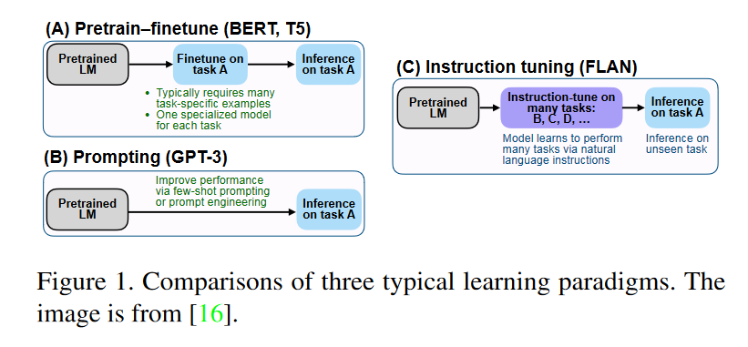
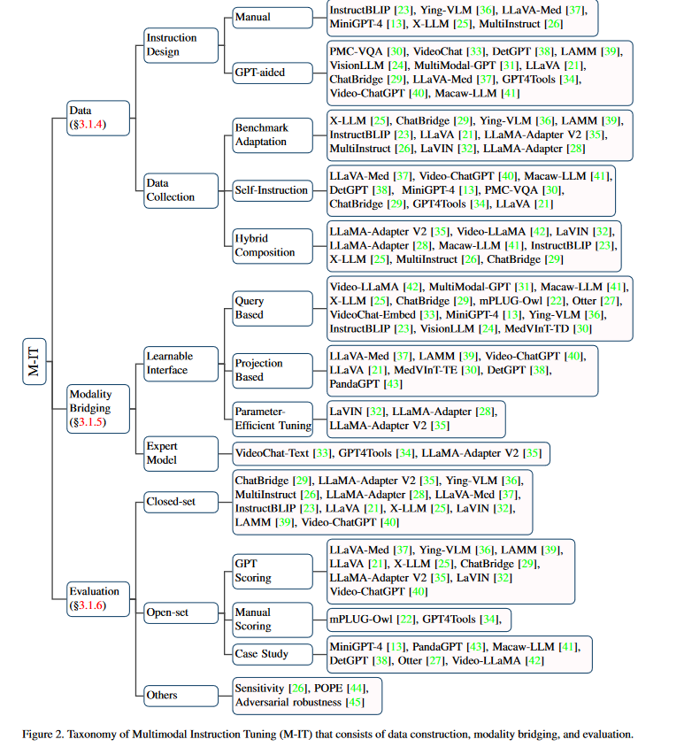
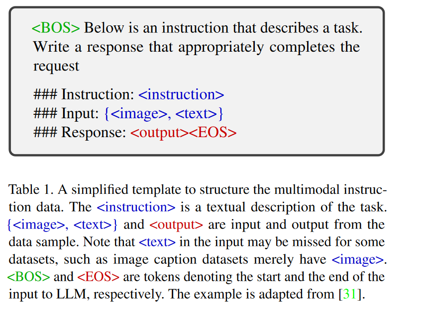
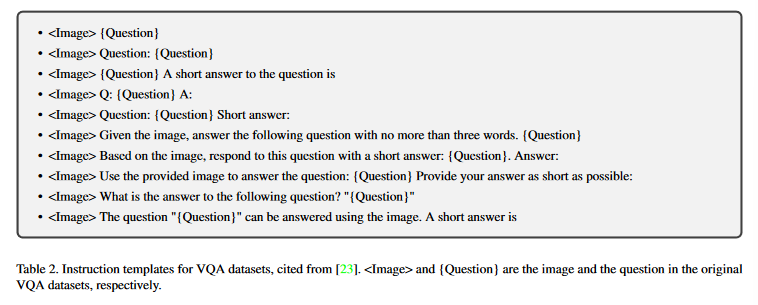
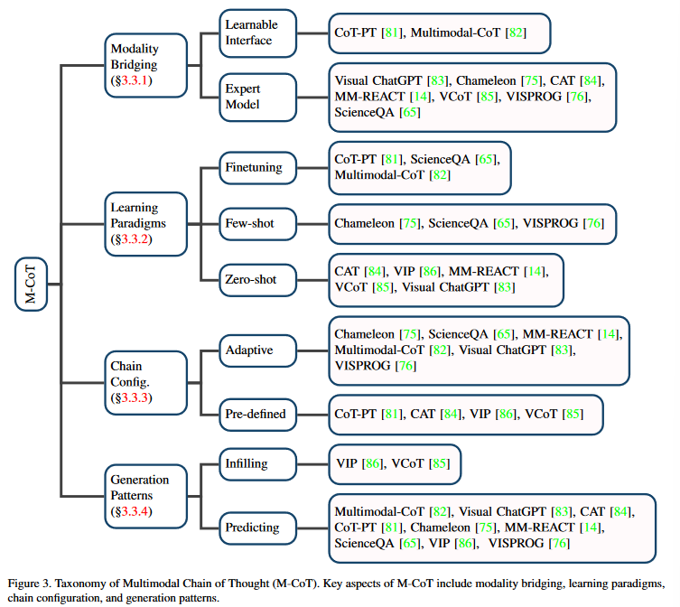
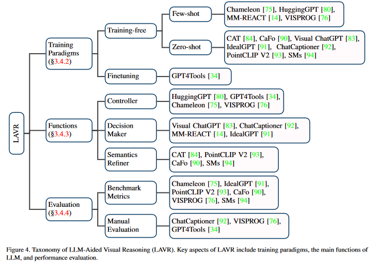

多模态大模型综述（1）
这篇文章是关于多模态大模型综述的一些介绍
综述：A Survey on Multimodal Large Language Models
摘要
多模态大语言模型( Multimodal Large Language Model，MLLM )是近年来兴起的一个新的研究热点，它利用强大的大语言模型( Large Language Model，LLM )作为大脑来执行多模态任务。MLLM出人意料的突现能力（涌现的新能力），如基于图像编写故事和OCR - free数学推理，在传统方法中是罕见的，这表明了通向人工智能的潜在道路。本文旨在对MLLM的最新进展进行跟踪和总结。首先，我们给出了MLLM的提法（制定概念），并对其相关概念进行了阐述。然后，讨论了多模态指令调优( M-IT )、多模态上下文学习( M-ICL )、多模态思维链( M-CoT )和LLM辅助视觉推理( LAVR )等关键技术及其应用。最后，我们讨论现有的挑战
- OCR-free因该是指不许用转换成文本，直接处理数据，如这里直接处理公式，而不需要转换成文本。
introduction
最近几年大语言模型得到了显著的进展。通过扩大数据规模和模型规模，这些LLMs具有了惊人的突现能力。
- 尽管LLMs在大多数自然语言处理( Natural Language Processing，NLP )任务上表现出惊人的零/少样本推理性能，但由于它们只能理解离散文本，因此本质上对视觉"瞎的"。
- 同时大视觉基础模型在感知上发展很快，与文本的传统结合更注重模态对齐[ 11 ]和任务统一性[ 12 ]，在推理方面发展缓慢。
鉴于这种互补性，单峰（单一的 unimodal，单模态）LLMs和视觉模型同时向对方运行（融合），最终导致了MLLM的新领域。
从发展人工智能( Artificial General Intelligence，AGI )的角度来看，MLLM可能从LLM向前迈进了一步，原因如下： - ( 1 ) MLLM更符合人类感知世界的方式。我们人类自然会接收到多感官的输入，这些输入往往是互补和合作的。 因此，多模态信息有望使MLLM更加智能化。
- ( 2 ) MLLM提供了更加友好的用户界面（接口）。得益于多模态输入的支持，用户可以更加灵活地与智能助手进行交互和交流。
- ( 3 ) Mllm是更全面的任务解决者。虽然LLMs通常可以执行NLP任务，但MLLMs通常可以支持更大范围的任务（多模态）
GPT-4 [ 2 ]因为展示了令人惊叹的例子，引发了对MLLM的研究热潮。然而，GPT - 4并没有开放多模态界面（接口），迄今为止也没有公开该模型的任何信息。
尽管如此，研究界为开发有能力的、开源的MLLM模型做出了许多努力；some surprising practical capabilities（实际应用能力） have been exhibited, such as writing website codes based on images [13], understanding the deep meaning of a meme [14], and OCR-free math reasoning [15].
我们撰写此项综述，是为了让研究者对MLLM的基本思想、主要方法和当前进展有一个大致的把握。 - 需要注意的是，我们主要关注视觉和语言模态，也包括涉及其他模态的工作。
- 具体来说，我们将现有的MLLM划分为四种类型并进行相应的总结，同时打开一个GitHub页面进行实时更新。据我们所知，这是关于MLLM的第一次调查。
overview
本文将最近的代表性 MLLM 分为四种主要类型：多模态指令调整 (MIT)、多模态上下文学习 (M-ICL)、多模态思维链 (M-CoT) 和 LLM 辅助视觉推理 (LAVR，a general framework to build task-solving systems)。前三个构成了 MLLM 的基本原理，最后一个是一个以 LLM 作为核心的多模态系统。这三（难道不是四种？？，看本节的最后一句话，第四种相当于一个架构！）种技术相对独立，可以结合使用。
我们从 M-IT（第 3.1 节）的详细介绍开始，以揭示 LLM 如何从两个方面适应多模态：结构和数据。然后我们引入 M-ICL（第 3.2 节），这是一种在推理阶段常用的有效技术，以提高few shot性能（in-context learning综述：Harnessing the Power of LLMs in Practice ：A Survey on ChatGPT and Beyond）。另一个重要的技术是 M-CoT (§3.3)，通常用于复杂的推理任务。之后，我们进一步总结了llm主要参与LAVR的几个角度（role，角色，LLM在LAVR中扮演的几个角色）(§3.4)，这通常涉及三种技术。最后，我们总结并给出潜在研究方向。
method
Multimodal Instruction tuning
instruction是指对任务的描述。
- Instruction Tuning（指令调优）是一种涉及在指令格式数据集[16]集合上微调预训练的llm的技术。通过这种方式进行调整，LLM 可以通过遵循新指令泛化（扩展）到看不见的任务，从而提高零样本性能。这种简单而有效的想法引发了后续工作在 NLP 领域的成功，例如 ChatGPT [1]、InstructGPT [17]、FLAN [16, 18] 和 OPT-IML [19]。
 - 有监督的微调方法通常需要许多特定任务的数据来训练特定任务的模型。（pretrain-finetune）
- 提示方法减少了对大规模数据的依赖，可以通过提示工程完成专门的任务。（prompt engineering）
- few-shot性能能够提高
- 但是zero-shot的性能相当平均。对zero-shot的效果一般
- 虽然小样本性能得到了提高，但零样本性能仍然相当平均[ 5 ]。
- 不同的是，指令微调学习如何泛化到看不见的任务，而不是像two counterparts那样拟合特定的任务（two counterparts：前面的哪两种方法）。
- instruction tuning is highly related to multi-task prompting [20].
传统的多模态模型仍然局限于前两种tuning范式，缺乏zero shot（零样本）能力。
因此，最近的许多工作[ 13、21、22]探索了将LLMs中的教学调整成功扩展到多模态。为了从单模态扩展到多模态，数据和模型都需要进行相应的适应。
- 对于数据，研究人员通常通过改编已有（现有的）的基准数据集[23 - 28]或通过self-instruction获取M-IT数据集[13,21,29]。
- 对于模型：常见的方法就是将多模态数据注入LLMs中，利用大模型的强力的推理能力分析其他模态的数据
- 相关工作或者直接将外来嵌入（其余模态的嵌入，输入的特征化）对齐到LLMs [ 21、23 ~ 25、27、28、30 ~ 32]中，或者借助专家模型将外来（其余）模态翻译成LLMs可以摄取（处理）的自然语言[ 33、34]。
- 通过这种方式，这些工作通过多模态指令调优将LLM转化为多模态聊天机器人[ 13、21、22、33、35]和多模态通用任务求解器[ 23、24、26]。
在本节的后面部分，我们首先给出基础知识( § 3.1 . 2 )。在过渡到M - IT的定义之前，我们额外引入了M - IT之前的一个常见过程，即对齐预训练（alignment pre-training）( § 3.1.3 )。接下来，我们将剩余内容整理为图2所示：首先介绍M - IT数据是如何收集的( § 3.1.4 )，然后详细讨论MLLMs的模型适配，即不同模态之间的各种弥（bridge the gap）合方式( § 3.1.5 )。最后，我们介绍了评估指令调整MLLM的评估方法( § 3.1.6 )。

Preliminaries
本部分简要说明了多模态指令样本的一般结构和M - IT的一般流程。

- 多模态指令样本通常包括一条指令和一个输入输出对
- 该指令通常是描述任务的自然语言句子，例如，“详细描述图像”。
- 输入可以是类似于视觉问答( VQA )任务的图像-文本对[ 46 ]，也可以是类似于图像描述任务的图像[ 47 ]。
- 输出是对以输入为条件的指令的回答。
- 如表1所示，指令模板是灵活的，且受手工设计[ 21、31、33]的约束。值得注意的是，指令样本也可以泛化为多轮（multi-round）指令，其中多模态输入共享[ 21、30、31、43]。
- 在形式上，多模态指令样本可以表示为三元组形式。$$(I,M,R)$$其中表示：instruction，the multimodal input ,the ground truth response
- MLLM在给定指令和多模态输入的情况下预测一个答案$$A=f(I,M;\theta)$$
- 这里A表示预测的answer，表示模型的参数。训练目标是通常用于训练LLMs [ 21、30、32、43]的原始自回归目标（auto-regressive objective），在此基础上，MLLM被要求预测回答（response）的下一个token。目标为：$$\mathcal{L}(\theta)=-\sum\limits_{i=1}^{N}\log p(R_{i}|I,R_{<i};\theta)$$其中N是真实response（回答）的回答
modality Alignment
在论文综述：Harnessing the Power of LLMs in Practice ：A Survey on ChatGPT and Beyond中有提到human alignment，增加了鲁棒性
通常对成对数据（pair-data ）进行大规模的(相对于指令整定)预训练，以鼓励不同模态[ 25,29,35,38]之间的对齐，这在M - IT之前。对齐数据集通常为图像-文本对[ 48-56 ]或自动语音识别( Automatic Speech Recognition，ASR ) [ 57-59 ]数据集，均包含文本。更具体地说，图像-文本对以自然语言句子的形式描述图像，而ASR数据集包含语音的转录。对齐预训练的常用方法是将预训练好的模块(如视觉编码器、LLM等)冻结，并训练一个可学习的接口[ 21,37,38]。
数据
从数据集看来，我认为这也是一种finetuning，但是这里的数据集是可以构造的，以动态的适应不同的任务
多模态指令数据的采集是M - IT的关键。收集方法大致可分为以下几类：
- benchmark adaptation
- self-instruction
- hybrid composition
benchmark adaptation
benchmark数据集是高质量数据的丰富来源。
大量的研究[23 - 26,28,29,32,35]直接利用了现有的基准数据集来构造指令格式的数据集。以VQA数据集的转换为例，原始样本是一个输入输出对，其中输入包括图像和自然语言问题（<image> {question}），输出是基于图像的问题的文本答案。这些数据集的输入-输出对可以自然地包含指令样本的多模态输入和回答。指令，即任务的描述，可以来自手动设计，也可以来自GPT辅助下的半自动生成。具体来说，一些作品[13,23,25,26,36,37]手工制作了一个候选指令pool（池，这里还不是池化，相当于存储器），并在训练期间在池中进行采样。我们为VQA数据集提供了一个指令模板示例，如表2所示。另一些工作则手工设计一些种子指令，并使用这些指令提示GPT生成更多的种子指令[24,31,33]。

但是由于现有VQA和caption数据集的答案通常很简洁，直接使用这些数据集进行指令调优可能会限制MLLM的输出长度。解决这个问题有两种常见的策略：
- 第一个是修改instruction，直接告诉LLM我们要简短、单句。例如，ChatBridge[29]明确声明short和brief用于简答数据，以及a snetence和single sentence用于caption数据。类似地，InstructBLIP[23]将short 和brief插入到公共数据集的指令模板中，这些公共数据集的回答更倾向于简短的。
- 既然无法变长，那我就显示的直接修改instruction，添加short，brief的内容，这样显示的学习，可以让模型直接学习short与response（答案）的关系，避免的一些隐式的学习所造成的影响。
- 第二种方法是延长现有答案的长度[36]。例如，M3IT[36]提出通过用原始问题、答案和上下文提示ChatGPT来改写原始答案。
Self-instruction
尽管现有的基准数据集可以提供丰富的数据源，但它们通常不能很好地满足现实场景中的人类需求，例如多轮对话（multiple round）。为了解决这个问题，一些作品通过自我指导（self-instruction）来收集样本[60]，这引导（booststrap）llm使用一些手工注释的样本来生成遵循文本指令（textual instruction-following）的数据。具体来说，一些遵循指令（instruction-following）的样本是手工制作的种子（seed）样本，然后提示ChatGPT/GPT-4以种子样本为指导生成更多的指令样本。(和benchmark中的最后面的一样都是GPT-Aid，GPT辅助生成)（ LLaVA[21]通过将图像翻译成带有caption和边界框的文本，并提示GPT-4在种子示例的上下文中生成新数据，将该方法扩展到多模态领域。通过这种方式，构建了一个M-IT数据集，称为llava - instruction -150k。根据这一思路，随后的作品如MiniGPT-4[13]、ChatBridge[29]、GPT4Tools[34]和DetGPT[38]开发了不同的M-IT数据集，以满足不同的需求。这个和上面的区别在哪，benchmark那，这里应该和benchmark那的，这里的更加针对任务，一些benchmark无法满足的特定任务）
（这里可以看一下table 3）
- instruction样本和instruction-following样本是指什么
- instruction-following样本因该是基于instruction构造的，需要生成出来的instruction满足要求。
- instruction-following 样本是指遵循instruction的样本（从input到output）
- 对于这里所说的可能是根据自己设计的一些指令，然后已经注释好的样本作为seed，输入到GPT4中作为上下文，再这个环境下，再根据对图片的编码：解析成文本text（）内容和位置，然后再相应的instructions，输入到GPT4中去，得到的response与输入和instructions构成新的样本：instruction-following。
- query：查询，询问
Hybrid Composition
Apart from the M-IT data, languageonly user-assistant conversation data can also be used to improve conversational proficiencies and instruction-following abilities [22, 31, 32, 35].（除去上面的MIT数据，纯文本的数据也可以用于提高对话的熟练度和模型遵循指令的能力。）
Multi Instruct [ 26 ]探讨了融合单模态和多模态数据的不同训练策略，包括混合指令调优(混合两种数据并随机打乱)、顺序指令调优(文本数据紧接着是多模态数据)和基于Adapter的顺序指令调优。实证结果表明，在多模态数据上，混合指令调优至少不比单独调优差。
思考
如何构造instruct-follow 数据或prompt数据集还得继续思考
Modality Bridging
由于LLMs只能感知文本，因此弥合自然语言和其他模态之间的鸿沟是必要的。然而，以端到端的方式训练一个大型的多模态模型是很昂贵的。而且，这样做会带来灾难性遗忘的风险[ 61 ]。
- 因此，一种更实用的方法是在预训练的视觉编码器和LLM之间引入一个可学习的接口。（Learnable Interface）
- 可学习的接口负责在冻结预训练模型的参数时连接不同的模态。(
交替式训练？？) - 挑战在于如何高效地将视觉内容翻译成LLM能够理解的文本。
- A common and feasible solution is to leverage a group of learnable query tokens to extract information in a query-based manner [62], which first has been implemented in Flamingo [63] and BLIP-2 [64], and subsequently inherited by a variety of work [23,25,42].
- Furthermore, some methods use a projection-based （基于投影）interface to close the modality gap [21, 30, 38, 43].
- adapter：也有一些工作探索了一种参数有效的调优方式。LLaMA- Adapter [ 28、35]在训练时在Transformer中引入了一个轻量级的适配器模块。La VIN [ 32 ]设计了一个混合模态适配器来动态决定多模态嵌入的权重。
- 可学习的接口负责在冻结预训练模型的参数时连接不同的模态。(
- 另一种方法是借助专家模型将图像翻译成语言，然后将语言发送给LLM。（expert model）
- 除了learnable interface，使用专家模型，如图像描述模型，也是弥合模态鸿沟的可行方法[ 35 ]。
- 与之不同的是，专家模型背后的思想是在没有训练的情况下将多模态输入转换为语言。
- 这样，语言学习者就可以通过转换后的语言间接地理解多模态。
- 例如，videochat-Text [ 33 ]使用预训练的视觉模型来提取动作等视觉信息，并使用语音识别模型来丰富描述。
- 尽管使用专家模型是直接的，但它可能不像采用Learnable interface那样灵活。多（其余）模态（foreign modalities）转换为文本通常会造成信息损失。正如videochat- Text [ 33 ]指出的那样，将视频转化为文本描述会扭曲时空关系。
Evaluation 评估
评价M - IT后模型性能的指标有很多，根据问题类型（genres）可以大致分为两类，包括closed-set和open- set。
Closed-set
- 封闭式问题指的是一种可能的答案选项已预先确定并限制在一个有限集合内的问题。评估通常在benchmark-adapted数据集上进行。
- 在这种情况下，response自然可以通过benchmark指标来判断 [21, 23, 25, 26, 28, 29, 32, 35]。
- The evaluation settings are typically zero-shot [23,26,29,36] or finetuning [21,23,25,28,32,35–37].
- The first setting often selects a wide range of datasets covering different general tasks and splits them into
held-in and held-outdatasets. After tuning on the former, zero-shot performance is evaluated on the latter with unseen datasets or even unseen tasks. 会尽可能涵盖更广泛的一般任务 - the second setting is often observed in the evaluation of domain-specific downstream tasks.(
finetuning)主要做的是特定领域下的学习
- The first setting often selects a wide range of datasets covering different general tasks and splits them into
- 上述评估方法通常仅限于小范围的选定任务或数据集，缺乏全面的定量比较。
- 为此，一些人努力开发专为 MLLM 设计的新基准 [39, 40, 72]。
- 例如，Fu 等人[73] 构建了一个综合评估基准 MME，其中包括总共 14 项感知和认知任务。MME 中的所有指令-答案对都是人工设计的，以避免数据泄露。
- LAMM-Benchmark [39] 的提出是为了在各种二维/三维视觉任务中对 MLLM 进行定量评估。
- Video-ChatGPT [40] 为基于视频的会话模型提出了一个定量评估框架，其中包含两类评估，即基于视频的生成性能评估和 zeroshot 问答评估。
- 为此，一些人努力开发专为 MLLM 设计的新基准 [39, 40, 72]。
- Open-set
- 与封闭式问题相比，开放式问题的回答可以更加灵活，MLLM 通常在其中扮演聊天机器人的角色。由于聊天内容可以是任意的，因此与封闭式输出相比，判断起来更加棘手。
- 标准可分为人工评分、GPT 评分和案例研究。
- manual：人工评分需要人工对生成的回答进行评估。这种方法通常涉及手工设计的问题，旨在评估特定的维度。
- 例如mPLUG-Owl [22]收集了一个与视觉相关的评估集合，用于评估自然图像理解、图表和流程图理解等能力。类似地，GPT4Tools [34]构建了两个集合，分别用于微调和zero-shot性能评估，并从思想、行动、论点和整体方面评估回答。
- GPT：由于人工评估耗费大量人力，一些研究人员探索了使用 GPT 进行评分，即 GPT 评分。
- 这种方法通常用于评估多模态对话的性能。
- LLaVA [21]提议通过GPT-4对回答进行评分，评估其在帮助性和准确性等方面的表现。具体而言，从COCO [48]验证集中随机选择30个图像，每个图像都有一个简短的问题、一个详细的问题和一个复杂的推理问题，通过在GPT-4上进行自我训练，产生由MLLM和GPT-4生成的答案，并将它们发送给GPT-4进行比较。
- 基于 GPT-4 的评分的一个主要问题是，目前其多模态界面尚未公开。因此，GPT-4 只能根据与图像相关的文本内容（如标题或边界框坐标）生成响应，而无法访问图像[37]。因此，在这种情况下，将 GPT-4 设置为性能上限可能是有问题的。
- 另一种方法是通过案例研究比较MLLM的不同能力。例如，mPLUG-Owl使用一个与视觉相关的笑话理解案例来与GPT-4 [2]和MM-REACT [14]进行比较。类似地，Video-LLaMA [42]提供了一些案例，展示了音频-视觉共感知和常识概念识别等能力。
- 这种方法通常用于评估多模态对话的性能。
- manual：人工评分需要人工对生成的回答进行评估。这种方法通常涉及手工设计的问题，旨在评估特定的维度。
- other
- 还有一些方法侧重于 MLLM 的特定方面。例如，MultiInstruct [26] 提出了一种称为灵敏度的指标，用于评估模型对不同指令的鲁棒性。
- Li 等人[44] 深入研究了对象幻觉问题，并提出了一种查询方法 POPE 来评估这方面的性能。
Zhao 等人[45]考虑了安全问题，并提出评估 MLLM 对对抗性攻击的鲁棒性。
Multimodal In-Context learning
ICL是LLMs重要的新（emergent 涌现）能力之一。
ICL具有两个优点：
- （1）与传统的监督学习范式不同，传统的监督学习范式是从大量数据中学习隐含的模式，ICL的关键在于从类比（analogy）中学习[74]。
- 具体的，在ICL的设置中，具体来说，在 ICL 环境中，LLMs从几个例子和一个可选指令中学习，并推断出新的问题，从而以少样本的方式解决复杂且未知的任务[14, 75, 76]。
- （2）ICL通常以无需训练的方式[74]实施，在推理阶段可以灵活地集成到不同的框架中。
- 与 ICL 密切相关的一项技术是指令调整（instruction tuning）（见第 3.1 节），经验表明它能增强 ICL 的能力[16]。
在 MLLM 的背景下，ICL 被扩展到更多模态，从而产生了多模态 ICL（M-ICL）。基于（§3.1.2）中的设置，在推理时，M-ICL 可以通过在原始样本中添加演示集（即上下文样本集，a demonstration set，如a set of in-context samples ）来实现。在这种情况下，可以扩展模板，如表 3 所示。需要注意的是，我们列出了两个上下文中的示例以作说明，但示例的数量和排序可以灵活调整。事实上，模型通常对演示的安排很敏感[74, 77]。

在多模态应用方面，M-ICL主要用于两个场景：
- 解决各种视觉推理任务 [14, 27, 63, 78, 79]
- 前者通常涉及从一些（a-few）特定任务的例子中学习，然后归纳出新的但类似的问题。
- 通过指令和演示所提供的信息，LLM能够了解任务在做什么，输出模板是什么，并最终生成预期的答案。（上下文学习）（和M-IT紧密结合）
- 教导LLM使用外部工具[75, 76, 80]。
- 工具使用的示例通常是纯文本的，而且更加精细（细粒度）。它们通常由一连串可按顺序执行的步骤组成，以完成任务。因此，第二种情况与 CoT 密切相关（见第 3.3 节）。
Multimodal Chain of thought
正如开创性（pioneer，先前的）的工作[7]所指出的那样，思维链是“一系列中间推理步骤”，已经被证明在复杂推理任务中是有效的[7, 87, 88]。思维链的主要思想是提示LLM不仅输出最终答案，还输出导致答案的推理过程，类似于人类的认知过程
受自然语言处理领域的成功启发，已经提出了多个工作来将单模态思维链扩展到多模态思维链（M-CoT）。我们在图3中总结了这些工作。首先，类似于M-IT中的情况（参见第3.1节），需要填补模态差距（gap，bridge）（第3.3.1节）。然后，我们引入了不同的范式来获得M-CoT能力（第3.3.2节）。最后，我们描述了M-CoT的更具体方面，包括链的配置（第3.3.3节）和链的形式（第3.3.4节）。

Modality bridging
要将 NLP 的成功经验应用于多模态，首先要解决的问题就是模态桥接。实现这一目标的方法大致有两种：融合特征或将视觉输入转化为文本描述。与第 3.1.5 节中的情况类似，我们将它们分别归类为可学习接口和专家模型，并依次进行讨论。
- 可学习接口这种方法涉及采用可学习接口将视觉嵌入映射到词嵌入空间。然后，将映射后的嵌入作为prompt发送给LLM，与其他语言一起引发M-CoT推理。例如，CoT-PT [81]将多个Meta-Net链接起来进行prompt微调，以模拟推理链，其中每个Meta-Net将视觉特征嵌入到与提示（prompt）相关的特定步骤偏置中（
where each Meta-Net embeds visual features into a step-specific bias to the prompt，其中，每个Meta - Net将视觉特征嵌入到对提示的特定步骤的偏见中）。Multimodal-CoT [82]采用了一个两阶段的框架，具有共享的基于Transformer的结构[89]，其中视觉和文本特征通过交叉注意力进行交互。 - 专家模型：引入一个专家模型将视觉输入转换为文本描述是一种可行的模态连接方法。例如，ScienceQA [65]采用图像字幕模型，并将图像字幕和原始语言输入的拼接传递给LLM。尽管简单直接，这种方法在字幕过程中可能会造成信息丢失[33, 82]
Learning paradigms
学习范式也是一个值得研究的方面。获得M - CoT能力的途径大致有三种
- finetuning
- training-free few/zero shot
- 三种方式对样本量的要求是依次递减的
finetuning：直观上，微调方法往往涉及到对特定数据集进行M - CoT学习。 例如，Science QA [ 65 ]构建了一个带有讲座和解释的科学问答数据集，该数据集可以作为学习CoT推理的来源，并在该数据集上进行微调。多模态CoT [ 82 ]也使用了Science QA基准，但以两步方式生成输出，即理据(推理步骤链)和基于理据的最终答案。CoT-PT [ 81 ]通过结合即时调整和特定步骤的视觉偏向来学习一个隐式的推理链。
few/zero-shot：小样本/零样本学习在计算效率上更高效。
- 它们之间的主要区别在于，小样本学习通常需要手工制作一些（a few（这里可以理解成少量的））语境（in-context）样本，以便模型能够更容易地一步一步地学习推理。
- 零样本学习不需要任何具体的CoT学习实例。（将指令instruction作为prompt）
- 在这种情况下，通过提示设计的指令（如“让我们逐帧思考”或“这两个关键帧之间发生了什么”）（In this case, by prompting designed instructions like “Let’s think frame by frame” or “What happened between these two keyframes”）[85, 86]，模型学习利用嵌入的知识和推理能力，无需明确的指导。类似地，一些工作[14, 83]使用任务和工具使用的描述作为提示（prompt），将复杂任务分解为子任务。
Chain Configuration（链配置）
链的配置是推理的一个重要方面，可以分为自适应和预定义形式（链式配置是推理的一个重要方面，可分为自适应配置和预定义配置。）。自适应配置要求LLM自行决定何时停止推理链[14, 65, 75, 76, 82, 83]，而预定义配置使用预定义的长度停止链[81, 84–86]。
Generation Patterns 生成模式
链是如何构建的是一个值得研究的问题。我们将当前的工作总结为：
- 在这种情况下，通过提示设计的指令（如“让我们逐帧思考”或“这两个关键帧之间发生了什么”）（In this case, by prompting designed instructions like “Let’s think frame by frame” or “What happened between these two keyframes”）[85, 86]，模型学习利用嵌入的知识和推理能力，无需明确的指导。类似地，一些工作[14, 83]使用任务和工具使用的描述作为提示（prompt），将复杂任务分解为子任务。
- 基于填充的模式（an infillingbased pattern）：具体来说，基于填充的模式要求通过前后上下文（前后步骤）之间的推理步骤推断来填补逻辑间隙[85, 86]。
- 基于预测的模式（a predicting-based pattern）：基于预测的模式要求根据指令和以前的推理历史[14, 65, 75, 76, 82, 83]来扩展推理链。
- 这两种类型的模式都要求生成的步骤应保持一致和正确
LLM-Aided Visual reasoning（LLM辅助视觉推理）
介绍
受工具增强型LLMs成功的启发[ 95-98 ]，一些研究探讨了调用外部工具[ 14、34、75、76]或视觉基础模型[ 14,83,84,91,92,99]进行视觉推理任务的可能性。这些工作以LLMs作为不同角色的帮助者，构建了任务特定（task-specific）的[ 84、90、93 ]或通用的（general-purpose）[ 14,75,76,80,83]视觉推理系统。
与传统的视觉推理模型[100–102]相比，这些工作具有几个优点：
- 较强的泛化能力。 利用从大规模预训练中学习到的丰富的开放世界知识，这些系统可以很容易地泛化到未见过的对象或概念，并具有显著的零/小样本性能[ 75、76、90、91、93、94]。
- Emergent abilities ：借助于LLMs强大的推理能力和丰富的知识，这些系统能够完成复杂的任务。例如，给定一幅图像，MM-REACT [ 14 ]可以解释表面下的含义，例如解释meme为何是有趣的。
- Better interactivity and control 更好的互动性和控制性
- 更好的交互性和控制性。传统模型通常允许一组有限的控制机制，并且往往需要昂贵的精简（组织好的，curated）数据集[ 103、104 ]。
- 相比之下，基于LLM的系统具有在用户友好界面中进行精细控制的能力(例如点击和自然语言查询)[ 84 ]。
本节的以下部分按照图4中的显示顺序组织：首先介绍在构建LLM辅助视觉推理系统时采用的不同训练范式（第3.4.2节）。随后，我们深入探讨LLM在这些系统中扮演的主要角色（第3.4.3节）。最后，我们以各种类型的性能评估总结我们的讨论。

Training Paradigms
根据训练范式的不同，LLM辅助的视觉推理系统可以分为training-free和微调finetuning两类。
training-free
- 在预训练的LLMs中存储了丰富的先验知识，一种直观而简单的方法是冻结预训练模型，直接促使LLMs满足各种需求。根据设定，推理系统可以进一步分为少样本模型和零样本模型。
- 少样本模型（few-shot）[ 14、75、76、80 ]需要一些手工设计的语境（in-context）样本(见§ 3.2 )来指导LLMs生成程序（programs）或执行步骤序列。这些程序或执行步骤作为相应基础模型或外部工具/模块的指令。
- 零样本模型则更进一步，直接利用LLM的语言学/语义学知识或推理能力。例如，PointCLIP V2 [ 93 ]促使GPT - 3生成具有3D相关语义的描述，以便更好地与相应的图像对齐。在CAT [ 84 ]中，LLMs被指导根据用户查询对字幕进行精化。
Finetuning
- 为了激活工具使用方面的规划能力并提高系统的指令跟随（instruction-following）能力，GPT4Tools [ 34 ]引入了指令调整方法(参见§ 3.1 )。收集了一个新的工具相关指令数据集，并使用该数据集对模型进行微调。
Functions
为了进一步考察LLM在LLM辅助的视觉推理系统中究竟扮演何种角色，现有的相关工作分为三类
- LLM as a Controller
- LLM as a Decision Maker
- LLM as a Semantics Refiner
前两个角色，即控制者和决策者，与CoT有关(见§ 3.3 )。它经常被使用，因为复杂的任务需要分解成中间更简单的步骤。单轮任务中Controller 更常见，多轮任务中Decision Maker更常见。
LLM as a Controller - 在这种情况下，LLMs充当中央控制器
- 将一个复杂的任务分解为更简单的子任务/步骤
- 第一步通常是利用LLMs的CoT能力来完成的。第二步将这些任务分配给合适的工具/模块。具体来说，llm被明确提示输出任务规划[80]，或者更直接地输出要调用的模块[34,75,76]。例如，VISPROG[76]提示GPT-3输出一个可视化程序，其中每个程序行调用一个模块来执行一个子任务。此外，LLMs还需要为模块输入输出参数名。为了处理这些复杂的需求，一些手工制作的语境(见§ 3.1 )例子被用作参考[ 75、76、80 ]。这与推理链的优化(见§3.3)密切相关，或者更具体地说，是least-to-most prompting[105]技术。通过这种方式，复杂问题被分解成子问题依次解决。
LLM as a Decision Maker
- 第一步通常是利用LLMs的CoT能力来完成的。第二步将这些任务分配给合适的工具/模块。具体来说，llm被明确提示输出任务规划[80]，或者更直接地输出要调用的模块[34,75,76]。例如，VISPROG[76]提示GPT-3输出一个可视化程序，其中每个程序行调用一个模块来执行一个子任务。此外，LLMs还需要为模块输入输出参数名。为了处理这些复杂的需求，一些手工制作的语境(见§ 3.1 )例子被用作参考[ 75、76、80 ]。这与推理链的优化(见§3.3)密切相关，或者更具体地说，是least-to-most prompting[105]技术。通过这种方式，复杂问题被分解成子问题依次解决。
- 将一个复杂的任务分解为更简单的子任务/步骤
- 在这种情况下，复杂任务以多轮的方式进行求解，往往以迭代的方式进行[ 91 ]。决策者通常履行以下职责：( 1 )总结当前上下文和历史信息，判断当前步骤可获得的信息是否足以回答问题或完成任务；( 2 )整理和归纳答案，以用户友好的方式呈现。
LLM as a Semantics Refiner - 当LLM作为语义提炼者时，研究人员主要利用他们丰富的语言学和语义学知识。具体来说，LLM经常被要求将信息整合到连贯流畅的自然语言句子中[94]，或者根据不同的特定需求生成文本[84,90,93]
Evaluation
有两种方法可以评估LLM-Aided视觉推理系统的性能，即基准度量[75,76,90,91,93,94]和手动评估[34,76,92]。手动人工评估一般都是需要对模型的某些特殊方面进行评估，例如生成结果的丰富性、准确性，或者模型生成的某种思想等。（有点像M-IT中的那一块）
Challenges and Future Directions
MLLM的发展还处于初级阶段，仍有很大的改进空间，现总结如下：
- 目前的多层感知机在感知能力上仍然有限，导致视觉信息获取不完全或错误。这可能是由于信息容量和计算负担之间的折中。更具体地说，Q-Former [ 64 ]仅使用32个可学习的标记（tokens）来表示一幅图像，这可能会导致信息丢失。尽管如此，增大token大小势必会给输入长度通常有限的LLMs带来较大的计算负担。一种潜在的方法是引入像SAM [ 8 ]这样的大型视觉基础模型来更有效地压缩视觉信息[ 21、29 ]。
- MLLM的推理链条可能是脆弱的。例如，Fu等[ 73 ]发现，在一个数学计算案例中，MLLM虽然计算出了正确的结果，但由于推理的断裂，仍然给出了错误的答案。这表明单模态LLM的推理能力可能不等于LLM接收到视觉信息后的推理能力。如何改进多模态推理是一个值得研究的课题。
- MLLMs的指令跟随能力需要提升。M - IT之后，尽管有明确的指令"请回答是或否" [ 73 ]，但仍有部分MLLM无法生成预期的答案( ‘是’或’否’)。这表明，指令调优可能需要覆盖更多的任务以提高泛化性
- object幻觉问题是广泛存在的[ 13、44]，这在很大程度上影响了MLLMs的可靠性。这可能是由于对齐预训练不足造成的[ 13 ]。因此，一种可能的解决方案是在视觉和文本模态之间进行更细粒度的对齐。
细粒度是指图像的局部特征，可以通过SAM [ 21、29 ]获取，以及相应的局部文本描述。 - 需要Parameter-efficient training。现有的两种模态桥接方式，即可学习接口和专家模型，都是为减少计算负担而进行的初步探索。更有效的训练方法可以在有限的计算资源下释放更多的功能。
总结
在本文中，我们对现有的MLLM文献进行了调查，并对其主要方向进行了概述，包括三种常见的技术( M - IT、M - ICL、MCoT)和构建任务解决系统的通用框架( LAVR )。此外，我们还强调了当前有待填补的研究空白，并指出了一些有前景的研究方向。我们希望此次调查能够让读者对当前MLLM的进展有一个清晰的认识，并激发更多的工作。